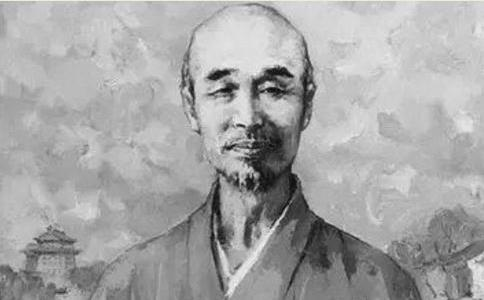

有这么一个富二代：从小家财万贯；年少时风流不羁，和名妓上演一出爱恋戏码；中年时当演员、搞音乐，轻断食；晚年却看破红尘，遁入空门。
前半生浪迹燕市，厮磨金粉；后半生晨钟暮鼓，青灯古佛度流年。李叔同的一生，活出了别人的好几辈子。
1880年，李叔同出生于天津故居李宅，李家世代经商，到李叔同已经是名门望族，出生于钟鸣鼎食之家，李叔同早早就表现出过人的天赋。
8岁读四书五经，13岁攻历朝书法，15岁那年惊才绝艳，名噪一时。
自古少年多风流，李叔同也不例外。一次花间酒肆的消遣，他对名伶杨翠喜一见倾心。
看你浓妆艳抹，顾盼
可
18岁时，母亲为他做主，迎娶商户之女。
只是仅凭父母之命的
恰逢国家遭难，年轻气盛的李叔同参加维新变法，一腔热血的他还刻下一枚“南海康君是吾师”的印章以表心意。
历史验证了这场变法的惨败，李叔同仓皇下奉母携眷逃往上海。上海灯红酒绿，无处发泄的李叔同沉迷于柳巷花间，交友宴饮，赌书泼墨，挥金如土的他还在上海滩粉墨登场，表演京剧。
戏里演绎悲欢离合，戏外感受凡尘俗世的荒唐、绚烂与黯败，在一副寄情声色的皮囊下暗藏着一颗寻找归宿的灵魂。
就在这年少意气，滚滚红尘路上彷徨迷茫时，25岁的李叔同又遭遇变故：年仅46岁的生母辞世。
匆匆把母亲送回故居安葬，一向大胆的他不顾世俗眼光，在四百多来宾面前自弹钢琴，省掉一切繁文缛节，引起轰动。
理想失意，生母离世，反思过去种种轻颓之举悔恨不已，他只身一人，远赴日本，一去就是六年。
在日本，他考进了东京美术学院，学习西洋油画与剧本创作，将满腔的悲愤和一身的才情，埋藏在沉默的丹青与跳动的音符之间 。
本就天资聪颖，加上后天严格自律，李叔同艺术造诣颇深，名气渐长的他还吸引报纸采访。他已无暇顾及其他，因为他正忙着排练《茶花女》，而他扮演的正是女主角茶花女。
不出意料，李叔同又火了，因为不落窠臼的男扮女装，因为惊为
那时，李叔同等同于火的代名词，但对这个桀骜的天才大家敬之亦远之，唯独一位日本女子走进他心里——诚子。
两人因为
阔别祖国的六年早已发生了翻天覆地的变化。迷茫了三十年，李叔同找到了自己用武之地，他任教于直隶高等工业学堂，投身教育事业。
浮华几十载，李叔同对人生有了新的见识。
他本精通文墨，各种艺术学科，更深知美育的重要性。每次提前备好板书，耐心而温和的教导学生。
如今著名的漫画家
他不但带学生领略艺术的美妙，还贴心地帮他们解决
教书育人，也许可以换来内心的平和，但身世沉浮，朋友一个个远离，深感世事空幻无常却又无能为力，他含泪写下《送别》。
寂寥惆怅，深远绵长，这正是他的心境，孤寂的他性情变得越发孤僻，常常一个人掩门伏案，自顾写诗作画，或学习
1916年，夏丏尊躲到凉亭里吃茶，一句“像我们这种人，
他去虎跑寺断食20天。晨钟暮鼓，青灯佛卷，远离浮华尘嚣，灵魂漂浮四十年，他似乎找到最终归宿。
对于他的妻子诚子，他只有一封书信作为告别：诚子：
关于我决定出家之事，在身边一切事务上我已向相关之人交代清楚。上回与你谈过，想必你已了解我出家一事，是早晚的问题罢了。
经过了一段时间的思索，你是否能理解我的决定了呢？若你已同意我这么做，请
对你来讲硬是要接受失去一个与你关系至深之人的
做这样的决定，非我寡情薄义，为了那更永远、更艰难的佛道历程，我必须放下一切。我放下了你，也放下了在
我们要建立的是未来光华的佛国，在西天无极乐土，我们再相逢吧。
为了不增加你的痛苦，我将不再回上海去了。我们那个家里的一切，全数由你支配，并作为纪念。人生短暂数十载，大限总是要来，如今不过是将它提前罢了，我们是早晚要分别的，愿你能看破。
在佛前，我祈祷
叔同戊午七月一日
回校后，他开始食素，念经，颂佛。慢慢的，出家的念头在他心里萌发，直至成长为苍天大树。
三年后，李叔同正式在虎跑定慧寺出家。此举一出，惊动世人。
面对无数人的争议，他只是低头诵佛，一座山门，却隔出了两个世界。
从此世间再无李叔同，仅有的不过是
剃度之后，他芒鞋布衲、苦修律宗，于寺内，洗衣缝补，全都自己动手；外出云游，也不过一席一被而已。
朋友夏丏尊曾在路中偶遇，看见他用破了一半的毛巾擦脸，要帮他换，他断然拒绝了：还好用的，和新的差不多。
遁入空门，外物于他于浮云，但不变的是那悲天悯人的情怀。
伴随一盏青灯，弘一法师编绘出《护生画集》，劝人们从善、戒杀、爱惜生命。日寇侵袭时，他没有独善其身，而是集众演讲，尽一己之力，渡劫众生。
1942年10月13日晚，弘一法师走完了他不寻常的人生。江山笑，烟雨遥，历经沧桑世事之后，终究一笑绝尘，告别人世。
前半生风花雪月，交友宴饮，以一己之力推动中国文化和艺术，是举世瞩目的天才；后半生尝尽
人生短短能有几何，他是一个传奇，就连张爱玲所言：我从来不是高傲的人，至少在弘一法师寺院外面，我是如此